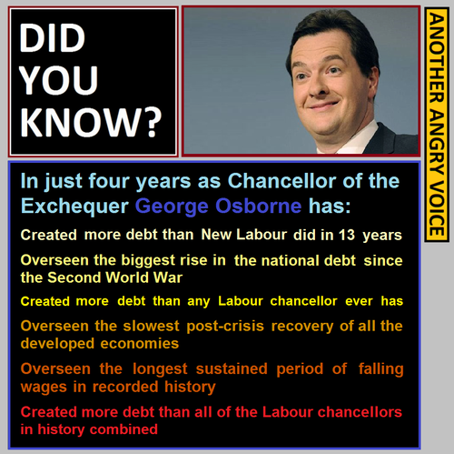

Another Angry Voice
March 11, 2015
Another Angry Voice (AAV) aka Tom paid a visit to Bristol on 5th March.
AAV introduced himself as a regular guy and emphasized that if he can do a political blog then anyone can.

An example of an infographic by AAV.
AAV brings up the information war that left has been quite bad at communicating left wing ideas. Terms like Socialist, Anarchist, Communist, Green etc. are all loaded with distorted emotional meanings that people do not want to be associated with. He calls it ‘Tabloidesque` definition:
Socialism - which really means ownership of the means of production, but most people are conditioned to think that it means spending other people’s money - politics of envy
Social liberalism - political correctness gone mad - discrimination against native Brits
Anarchism - let’s destroy everything
Environmentalism - hippies - anti-science - over subsidised wind farms
Feminism - discrimination against men
AAV’s strategy is to communicate the ideas only, without using the label, because as soon as you label yourself as something, attacks follow. He says:
“You can get socialist ideas across without ever mentioning the word socialist because the definition is owned by the establishment and the right wing.”
AAV emphasises the importance of using emotive argument backed up by facts and logic. Apparently there is research to show that people are far more receptive to emotive arguments. An example of emotive argument would be:
LHS: Tories shut 10 fire stations causing distress to London firemen in order to save £45 millions
RHS: Meanwhile, RBS which is 82% taxpayer owned hands out £607 to bankers in bonus payment
AAV also likes counter punches:
- David Cameron talking about decreasing national debt with contrary evidence of graph of total national debt increasing (using ONS as source).
And information blast:
Did you know: As a result of Secret Court legislation pushed through parliament by the Tories and Liberal Democrats, it is now possible to have their fate decided in a courtroom that they are not allowed to enter, on charges that they are not allowed to know based on evidence that they are not allowed to see.
Tories handing out contracts to Serco and G4S in the name of competition despite their awful records
Through his consistent use of infographics drawn primarily using Microsoft Paint to illustrate his points simply, AAV has raised the profile of the voice of the left and has nearly 140,000 followers on his Facebook page at the time of writing this.
“The enemy wants us small with a language that nobody understands, wants us as a minority, wants us refuged in our traditional symbols. He is delighted because he knows that in this way, we are not a danger.” - Pablo Ignesias
AAV uses example of Pablo Iglesias from Podemos, a Spanish movement that has formed a high profile left wing political party in less than a year. He describes their communication strategy as both skilful in their simple use of language and evil in their use of emotive language to activate the masses against the establishment. > “The smart way to keep people passive and obedient is to strictly limit the spectrum of acceptable opinion, but allow very lively debate within that spectrum.” - Noam Chomsky
Is it not all that BBC Question Time is week after week? Issues covered are identical, typically things like immigration, benefits, NHS… far from the issues that really affect people in real life, only to distract us from the real issues.
AAV compares voting for Labour as the same as voting for Tories without as much brutality.
On capitalism, AAV clarified that large corporations like Apple are not a good example of capitalism and its success as is often quoted.
With regards to the benefit cuts, AAV speculates that the public sector workers are under pressure to get a number of people off benefits benefits every week. As a result, people who are most vulnerable are pressured to jump bureaucratic hurdles and are forced into destitution.
As an alternative information source, AAV recommends Facebook over Twitter as he thinks that the information can reach more people than Twitter.
AAV is an admirer of the new Greek financial minister Yanis Varoufakis of the Syriza party and recommends watching this interview with Max Keiser.
On Green party, AAV thinks that revolution in the UK will probably called something else but shares similar ideology, possibly a coalition of the left like Syriza party in Greece. He thinks that Greens, who have seen a massive surge in membership recently has a connotation to being a single issue party despite their effort to incorporate issues like social justice into their image.
A member of the audience draws attention to Bristol’s own independent voice Bristol Cable who publish on a bi-monthly basis.
AAV recommends the following blogs who have shared a similar beginning:
Check out AAV’s own blog here.